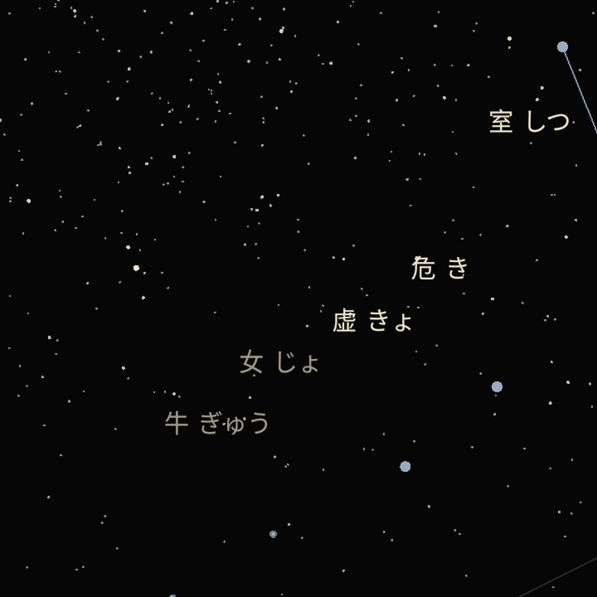

Your four pillars, computed right, on your phone.
Gilsung reads your BaZi with the calendar math the tradition actually uses: the year turns at lichun, months follow the solar terms, hours run on true local solar time, and a birth after 23:00 rolls the day pillar the way it should. Your chart and your daily reading are free.

A chart, not a marketplace
Nobody is waiting to sell you a reading
No fortune tellers, no per-minute billing, no coins, no hearts, nothing to recharge. And no talismans: Gilsung never sells you a fix for something it just told you to worry about. That structure is the whole business model of most apps in this category, and it is the one thing this app will not do.
The calendar math done properly
The BaZi year begins at lichun, not at Lunar New Year, and the two are commonly confused. Months follow the sectional solar terms. The hour pillar uses true local solar time rather than clock time, and the late-zi boundary at 23:00 is handled. Your chart names the pillars, stems and branches every reading came from.
Hard seasons read as tempo
A demanding luck pillar is named as demanding, because a reading that only ever says pleasant things is not reading your chart. But it is told as pace and as what a season asks of you, never as doom, never as a verdict on you, and never followed by something to buy.
Your birth details stay on your phone.
There is no account and no server of ours. Your birth date, time and place, the people you save, your chart and every reading built from it are created and kept on your device. We do not collect them, which means we cannot read them, search them, sell them or lose them. If you keep a device backup, that backup is yours and may include them, which the privacy policy says plainly rather than overstating the claim.
The App Store privacy label reads "Data Not Collected," because there is nothing for us to collect. In this category privacy has started to become something competitors advertise. It is worth asking whether an app that says it can also show you where the data would have gone.
Free every day. The rest, only if you want it.
Your four pillars and the day master reading are free. Your daily reading, built from your actual chart rather than from your animal sign, is free. Ten gods, hidden stems and your luck pillars are there to read.
When you want more it stays simple. Compatibility between two people is a small one-time purchase, read in two layers: the inner match from your day pillars and the outer match from your year pillars. Auspicious-day guidance is there when you are planning something. No subscription, no coins, no wallet, nothing to cancel.
One tradition, four of its own names
BaZi 八字 · saju 사주 · Shichu Suimei 四柱推命 · Empat Pilar · โป๊ยยี่
Gilsung is written in English, 한국어, 日本語, 简体中文, 繁體中文, ไทย and Bahasa Indonesia, and each one uses its own tradition's vocabulary rather than a translation of the Chinese. Japanese readers get 日干 and 通変星, not 日主 and 十神. Korean readers get 일간 and 십성. Traditional Chinese is written for Taiwan and Hong Kong, not converted character by character from Simplified.
The name is 吉星, the auspicious star: a real term in 命理 for the favourable stars in a chart, and the idiom 吉星高照, under a lucky star. It was the unanimous pick of four independent native readers. It also states the app's own rule, which is that a chart is never read as doom.